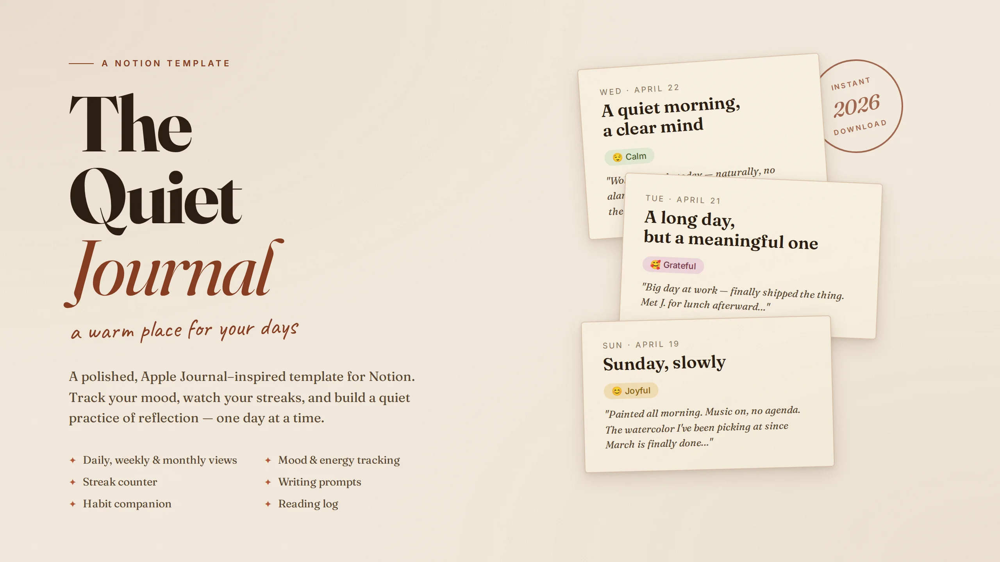
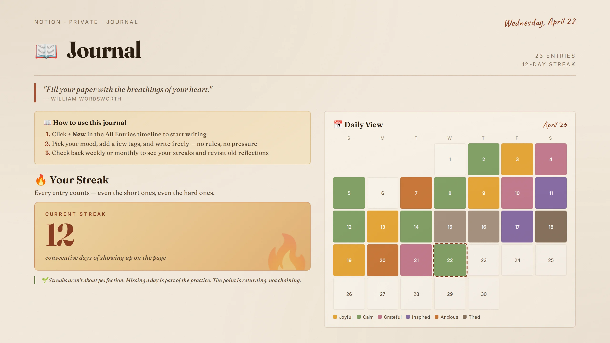
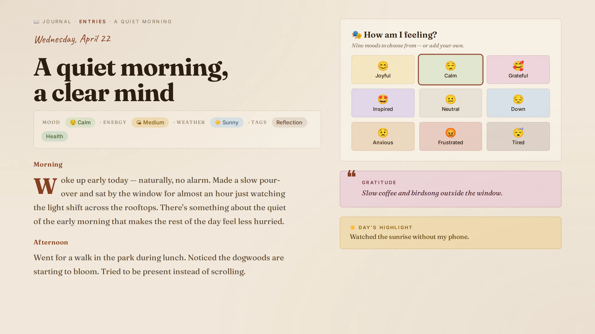
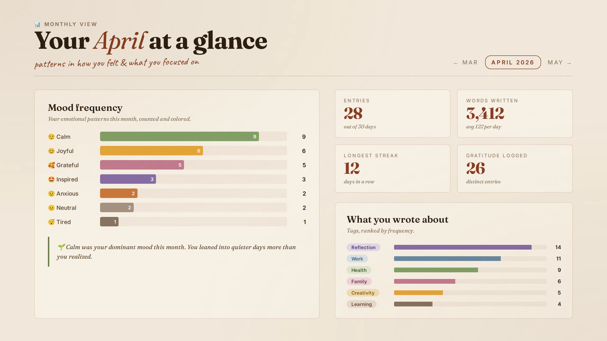

A journal that guides the page.
The Quiet Journal is a calm, structured Notion journal for daily reflection, gratitude, and goal tracking. Prompts that guide the page when the blank cursor won't — built for consistency, not perfection. Show up for two minutes a day, and the rest takes care of itself.

Reflection without the friction.
Four interconnected views that turn journaling from "I should" into "I did."
Daily prompts
A rotating set of thoughtful prompts so you never face a blank page. Two minutes is enough.
Gratitude log
Three things, every day. Small enough to actually do, big enough to change what you notice.
Mood tracker
Tap a mood at the end of the day. Over weeks, you'll see patterns — what days lift you, what days drain you.
Monthly review
Pre-written prompts to close out the month. Look back without being too hard on yourself, and set the next one.
The whole thing fits in two minutes.
If you can duplicate a Notion page, you can use this. No setup, no learning curve.
Duplicate the template
Click the duplicate link after purchase. The journal lands in your Notion account in one tap.
Open the daily page
Each day is one tap away from the dashboard. Today's prompt is waiting — no decisions, no setup.
Reflect for two minutes
Answer the prompt, log three gratitudes, tap your mood. Close the page. Come back tomorrow.
A look inside.
Quiet, calm, no clutter. The pages are designed to feel like exhale, not homework.



Start tonight.
One-time payment. Lifetime access. The smallest, calmest journal you'll ever buy.